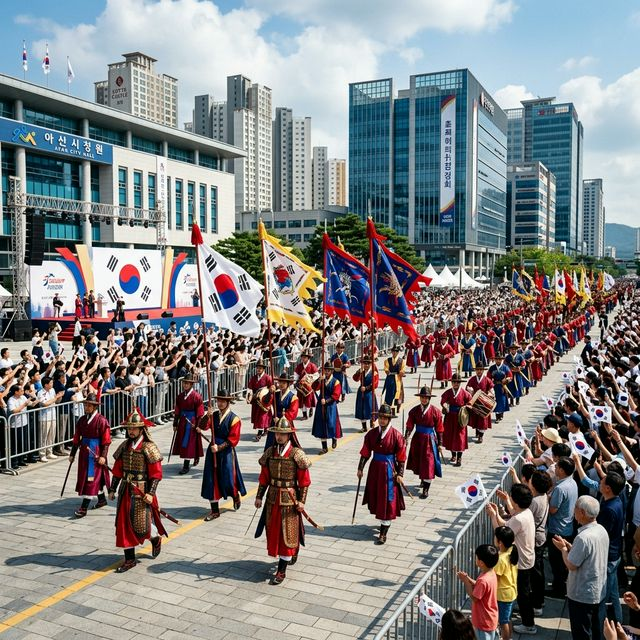
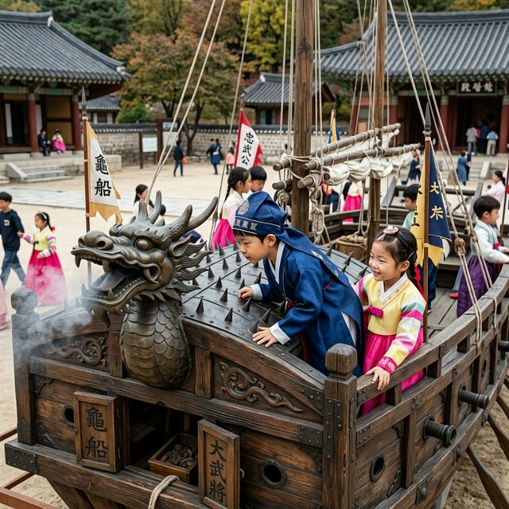
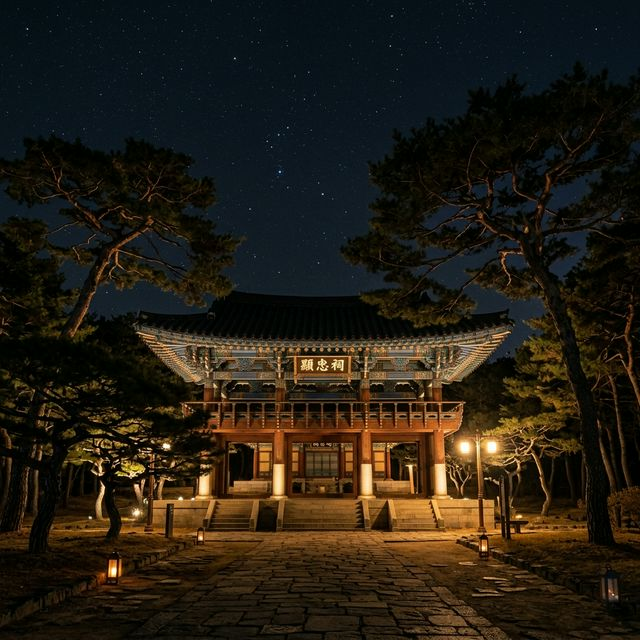

아산 성웅 이순신 축제 2026 곡교천 은행나무길 행사 및 거북선 승선 체험 꿀팁
"나의 죽음을 적에게 알리지 말라" - 대한민국 역사상 가장 위대한 영웅, 충무공 이순신 장군의 숭고한 정신을 기리는 2026 아산 성웅 이순신 축제가 곧 시작됩니다.
올해로 제65회를 맞이하는 이번 축제는 장군의 탄신일인 4월 28일부터 5월 3일까지 아산시 전역을 거대한 역사 테마파크로 변화시킵니다. 온양온천역의 활기찬 거리 퍼레이드부터 곡교천 은행나무길의
평화로운 정취, 그리고 성역 현충사의 엄숙한 달빛 야행까지, 이순신의 일대기를 현대적 감각으로 재구성한 다채로운 프로그램들이 여러분을 기다립니다. 늠름한 거북선의 위용을 직접 확인하고 학익진의 감동을
온몸으로 느낄 수 있는 이번 축제의 핵심 관람 포인트와 주차 정보, 셔틀버스 노선까지 상세히 안내해 드립니다.
1. 성웅 이순신 축제의 역사와 2026년의 특별한 의미
아산은 이순신 장군이 무과에 급제하기 전까지 무술을 연마하며 청년기를 보낸 장소이자, 현재 그의 영정이 모셔진 현충사가 있는 충절의 고장입니다. 성웅 이순신 축제는 단순한 지역
행사를 넘어 국난 극복의 상징인 장군의 리더십과 희생정신을 기리는 국가적 규모의 문화 축제로 자리 잡았습니다. 2026년에는 이순신 장군의 탄신 481주년을 맞이하여 더욱 고증에 충실한 의례와 최첨단 IT
기술이 결합한 멀티미디어 쇼가 강화되었습니다.
특히 올해 축제는 '이순신을 기억하며, 미래를 노래하다'라는 슬로건 아래, 자라나는 아이들에게는 역사의 교훈을, 어른들에게는 자긍심을 심어주는 프로그램을 대거 확충했습니다. 과거의 승리를 기념하는 데서 그치지
않고, 장군의 기록 정신(난중일기)을 현대적으로 계승하여 방문객들이 자신만의 일기를 써보는 등 참여형 콘텐츠가 늘어난 것이 특징입니다. 아산의 맑은 봄하늘 아래 펼쳐지는 이 거대한 역사 드라마의 주인공이 되어
장군이 걸었던 그 충의의 길을 함께 걸어보시기 바랍니다.

온양온천역 광장을 화려하게 수놓는 이순신 장군 기갑 행렬과 군악의장 퍼레이드 - AI 제작 이미지
2. 2026년 주요 행사장 및 일자별 핵심 프로그램
이번 축제는 온양온천역 광장, 곡교천 은행나무길, 현충사 세 곳을 주요 거점으로 분산 개최됩니다. 축제의 서막을 알리는 4월 28일 탄신 기념행사를 시작으로, 4월 30일에는
온양온천역 메인 무대에서 화려한 개막식과 드론 라이트 쇼가 펼쳐집니다. 수백 대의 드론이 밤하늘 위에 거북선과 학익진 형상을 그려내는 장면은 이번 축제의 백미가 될 것으로 보입니다.
주말인 5월 2일과 3일에는 '이순신 장군 일대기 행렬'과 '전국 학익진 댄스대첩' 등 역동적인 볼거리가 집중됩니다. 곡교천에서는 가족 단위 방문객을 위한 'ㅇㅅㅅ 놀이터'와 연날리기 대회가 열리며,
현충사에서는 야간 개장 프로그램인 '달빛 야행'을 통해 고즈넉한 사당의 정취를 느낄 수 있습니다. 장소마다 각기 다른 테마로 운영되므로, 하루 만에 모든 곳을 보려 하기보다는 1박 2일 일정으로 여유 있게
아산의 매력을 탐방하시는 것을 권장합니다.
3. 아이들의 교육 성지: 거북선 승선 체험 및 무과 시험
축제장 곳곳에는 아이들이 직접 이순신 장군의 삶을 체험해 볼 수 있는 공간이 마련됩니다. 특히 거북선 승선 체험은 실제 크기로 정교하게 재현된 거북선 내부를 관람하며 노를 젓는
시늉을 해보거나, 천자총통 같은 당시 화포의 구조를 직접 확인해 볼 수 있어 인기가 매우 높습니다. 아이들은 늠름한 거북선의 위용 앞에 서는 것만으로도 역사에 대한 깊은 관심을 갖게 됩니다.
또한, 어린이 무과 시험 체험 프로그램에서는 전통 활쏘기(국궁)와 말 타기 체험을 통해 장군의 무술 연마 과정을 익힐 수 있습니다. 단순히 보는 것에 그치지 않고 직접 몸으로 부딪치며 배우는 역사는 아이들에게
잊지 못할 교육적 경험이 될 것입니다. 모든 체험을 마친 후에는 '어린이 명예 이순신' 임명장을 수여하는 등 아이들의 성취감을 자극하는 이벤트도 준비되어 있습니다. 이번 주말, 스마트폰 게임 대신 활시위를
당기며 호연지기를 기르는 시간을 선물해 보는 건 어떨까요?
4. 현충사 '달빛 야행': 밤에만 볼 수 있는 신비로운 사당
축제 기간 중 단연코 가장 아름다운 장면을 꼽으라면 밤의 현충사일 것입니다. 평소에는 해가 지기 전에 문을 닫지만, 축제 기간에는 야간 개장을 통해 대중에게 그 신비로운 자태를
공개합니다. 조심스럽게 설치된 은은한 조명들이 고목과 연못, 그리고 정문을 비추며 낮과는 전혀 다른 몽환적이고 장엄한 분위기를 연출합니다.
정문인 충무문에서 본전에 이르는 길을 걷다 보면 장군의 정기가 느껴지는 듯한 장엄함에 숙연해지기도 합니다. 연못 주변에 비치는 반사광을 이용해 사진을 찍으면 마치 한 폭의 수묵화 같은 인생 사진을 건질 수
있습니다. 특히 숲속에서 흘러나오는 국악의 선율은 야간 산책의 깊이를 더해줍니다. 소음보다는 정적이, 화려함보다는 깊이가 있는 공간이므로 조용히 사색하며 장군의 위업을 기리고 싶은 분들에게 강력 추천하는
코스입니다.
| 축제 일정 |
2026. 04. 28(화) ~ 05. 03(일) |
| 메인 장소 |
온양온천역 광장, 곡교천, 현충사 |
| 주요 볼거리 |
군악의장 퍼레이드, 드론 쇼, 현충사 야행 |
| 셔틀 노선 |
배방, 탕정, 신창 등 5개 순환 노선 |
5. 곡교천 은행나무길 행사와 이순신 국제 카이트 페스티벌
노란 은행잎 대신 푸르른 새잎이 돋아난 곡교천 은행나무길은 축제 기간 동안 거대한 문화 예술의 거리로 변모합니다. 이곳에서는 세계 각국의 연이 하늘을 가로지르는 '이순신 국제
카이트 페스티벌'이 열립니다. 장군이 해전에서 신호용으로 사용했다는 '신호연'에서 착안한 이 행사는, 현대적이고 기상천외한 모양의 대형 연들이 하늘을 수놓으며 장관을 연출합니다.
은행나무길을 따라 늘어선 프리마켓과 거리 공연(버스킹)은 축제의 흥겨움을 더해줍니다. 특히 곡교천 변에 조성된 넓은 유채꽃밭과 보리밭은 청보리밭 부럽지 않은 초록 물결을 선사하여 나들이객들의 발길을
붙잡습니다. 평탄하게 닦인 길 덕분에 유모차나 휠체어 이용객도 큰 어려움 없이 관람이 가능하며, 곳곳에 마련된 쉼터와 카페에서 여유롭게 커피 한 잔의 여유를 즐길 수 있습니다. 강바람을 맞으며 연을 날리고
봄꽃을 감상하는 시간은 진정한 의미의 힐링을 선사할 것입니다.
6. 주차 공간 안내 및 교통 혼잡 대응 꿀팁
아산 시내에서 열리는 대규모 축제인 만큼 교통 체증은 피하기 어렵습니다. 특히 온양온천역 인근은 차량 통제가 많으므로 임시 주차장 위치를 미리 확인하는 것이 필수입니다.
아산시에서는 구 그랜드호텔 부지와 온양원도심 문화복합시설 부지 등을 무료 임시 주차장으로 개방합니다. 행사장과 가장 가까운 곳을 원하신다면 시외버스터미널 인근의 공영 주차장을 추천하며, 만차 시에는 안내
요원의 지시에 따라 외곽 주차장을 이용해야 합니다.
현충사와 곡교천을 방문하시는 분들은 은행나무길 제2다목적광장 주차장이나 충남경제진흥원 주차장을 이용하시면 비교적 쾌적하게 접근할 수 있습니다. 팁을 하나 드리자면, 주말에는 아산 시내 진입 자체가 어려울 수
있으니 오전 10시 이전에 충무교를 건너 행사장 근처에 도착하는 계획을 세우시는 것이 좋습니다. 또한 현장 상황은 아산시 공식 SNS나 내비게이션의 실시간 교통 정보를 통해 수시로 확인하는 기민함을 발휘해
보세요.

현충사 경내에 전시된 거북선 모델과 아이들의 무과 시험 체험장 풍경 - AI 제작 이미지
7. 스마트한 이동, 5개 노선 셔틀버스 적극 활용법
자차를 이용한 주차 스트레스를 피하고 싶다면 아산시에서 운영하는 무료 셔틀버스가 정답입니다. 올해는 탕정, 배방, 신창, 곡교천 야영장 등 주요 거점을 연결하는 총 5개 노선의
셔틀버스가 약 10~30분 간격으로 촘촘하게 운행됩니다. 오전 10시부터 밤 11시 30분까지 장시간 운영되므로 야간 프로그램 관람 후 귀가 시에도 큰 불편함이 없습니다.
특히 KTX 천안아산역이나 온양온천역에서 하차하여 셔틀을 갈아타면 외지 방문객들도 아주 쉽게 축제장 곳곳을 이동할 수 있습니다. 셔틀버스는 대형 버스로 운영되어 쾌적하며, 이동하는 동안 아산의 풍경을 감상할
수 있는 장점도 있습니다. 셔틀버스 노선도와 실시간 위치 정보는 축제 공식 홈페이지나 모바일 앱을 통해 확인할 수 있으니, 대중교통 여행의 매력을 만끽해 보시기 바랍니다. 환경도 지키고 교통 체증에서도
해방되는 스마트한 축제 관람의 필수 팁입니다.
8. 아산의 별미 탐방: 온천수로 구운 전과 전통 국밥
축제 구경 후 허기진 배를 채워줄 아산의 미식 탐방도 빼놓을 수 없습니다. 아산 하면 가장 먼저 떠오르는 온양온천 시장은 축제장과는 도보로 5분 거리입니다. 이곳에서는 시장
특유의 정겨운 인심이 담긴 잔치국수와 온천수처럼 뜨끈하고 깊은 맛의 소머리국밥이 인기입니다. 특히 갓 구워낸 빈대떡과 파전은 전통 축제의 분위기와 더할 나위 없이 잘 어울립니다.
또한, 아산의 명물인 '신선설농탕'이나 '밀면' 식당들도 축제장 근처에 밀집해 있어 다양한 입맛을 만족시켜 줍니다. 축제장 내 먹거리 부스(ㅇㅅㅅ 장터)에서도 청년 상인들이 개발한 이순신 도시락이나 장군
비빔밥 같은 독특한 메뉴들을 선보이니 시도해 보시는 걸 추천합니다. 식사 후에는 시장 내 유명한 꽈배기나 호두과자로 입가심하며 시장 구경을 이어가 보세요. 아산의 맛이 곁들여진다면 여러분의 축제는 더욱
풍성하고 즐거워질 것입니다.

은은한 조명이 비친 현충사의 장엄하고 고즈넉한 야경 - AI 제작 이미지
9. 2026 아산 성웅 이순신 축제 관람 체크리스트
완벽한 관람을 위해 편안한 운동화는 필수 중의 필수입니다. 온양온천역 광장에서 곡교천으로, 다시 현충사로 이어지는 도보 이동 거리가 상당하기 때문입니다. 또한, 주간의 강한
햇살을 피하기 위한 모자와 선글라스, 야간의 쌀쌀한 바람을 막아줄 경량 패딩이나 가디건 한 장은 필수로 챙기셔야 합니다. 현충사의 나무들이 주는 시원한 그늘 아래 잠시 쉴 수 있는 돗자리를 챙기는 것도 좋은
아이디어입니다.
무엇보다 이 축제는 '예의'와 '경건함'이 깃든 장소임을 잊지 말아야 합니다. 현충사 내에서 너무 큰 소리로 떠들거나 쓰레기를 버리는 행위는 삼가해 주시는 문화 시민의식을 보여주시기 바랍니다. 장군의 고귀한
희생 덕분에 우리가 오늘날 이 평화를 누리고 있음을 잠시나마 되새겨보는 것만으로도 이번 축제의 의미는 충분할 것입니다. 2026년의 봄, 아산의 뜨거운 열기 속에서 이순신이라는 불멸의 이름을 다시 한번 가슴에
새겨보십시오.
#아산성웅이순신축제
#2026아산축제
#이순신축제일정
#현충사야간개장
#곡교천은행나무길
#거북선체험
#아이와가볼만한곳
#아산주차팁
#봄나들이추천
#충무공이순신